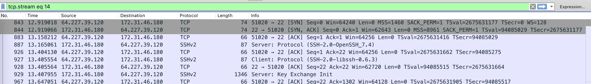

第一节 IP网络基础
TCP/IP 4层网络模型


- 物理层: 建立、维护、断开物理连接；
- 数据链路层: 建立逻辑连接、进行硬件地址寻址、差错校验等功能；
- 网络层: 进行逻辑地址寻址、实现不同网络之间的路径选择；
- 传输层: 定义传输数据得协议端口，以及流程和差错校验，协议有TCP、UDP，数据包一旦离开网卡即进入网络传输层；
- 会话层: 建立、管理、终止会话；
- 表示层: 数据的表示、安全、压缩；
- 应用层: 网络协议与最终用户得一个接口，协议有http ftp tftp smtp snmp dns telnet https pop3 dhcp。
ARP
ARP(Address Resolution Protocol)地址解析协议，是用来将IP地址解析为MAC地址的协议。主机或三层网络设备上会维护一张ARP表，用于存储IP地址和MAC地址的映射关系，一般ARP表项包括动态ARP表项和静态ARP表项。
动态ARP表项由ARP协议通过ARP报文自动生成和维护，可以被老化，可以被新的ARP报文更新，也可以被静态ARP表项覆盖。
静态ARP表项是由网络管理员手工建立的IP地址和MAC地址之间固定的映射关系。静态ARP表项不会被老化，不会被动态ARP表项覆盖
- 查看本机的ARP表的命令
arp -la
ICMP
Internet 控制消息协议 (ICMP) 是网络设备用来诊断网络通信问题的网络层协议。 ICMP 主要用于确定数据是否及时到达其预期目的地。通常，ICMP 协议用于网络设备，例如路由器。 ICMP 对于错误报告和测试至关重要，但它也可用于分布式拒绝服务 (DDoS) 攻击。
与 Internet 协议 (IP) 不同，ICMP 不与 TCP 或 UDP 等传输层协议相关联。这使得 ICMP 成为无连接协议：一个设备在发送 ICMP 消息之前不需要打开与另一个设备的连接。正常的 IP 流量使用 TCP 发送，这意味着任何两个交换数据的设备都将首先执行 TCP 握手，以确保两个设备都准备好接收数据。 ICMP 不会以这种方式打开连接。 ICMP 协议也不允许针对设备上的特定端口。
- ICMP数据包

- 发送ICMP的命令
ping
TCP
- 三次握手&四次挥手

- 三次握手数据包

- 四次挥手数据包

RTP

问题
- 以下协议分别哪一层的协议？
- TCP
- UDP
- HTTP
- HTTPS
- SSH
- SIP
- RTP
- 这些协议默认端口是什么？
- HTTP
- HTTPS
- TELNET
- SSH
- FTP
- SMTP
- POP3
- IMAP
- MySQL
- SIP
- TCP
- UDP
- 路由器和交换机分别在哪一层工作？
参考链接: